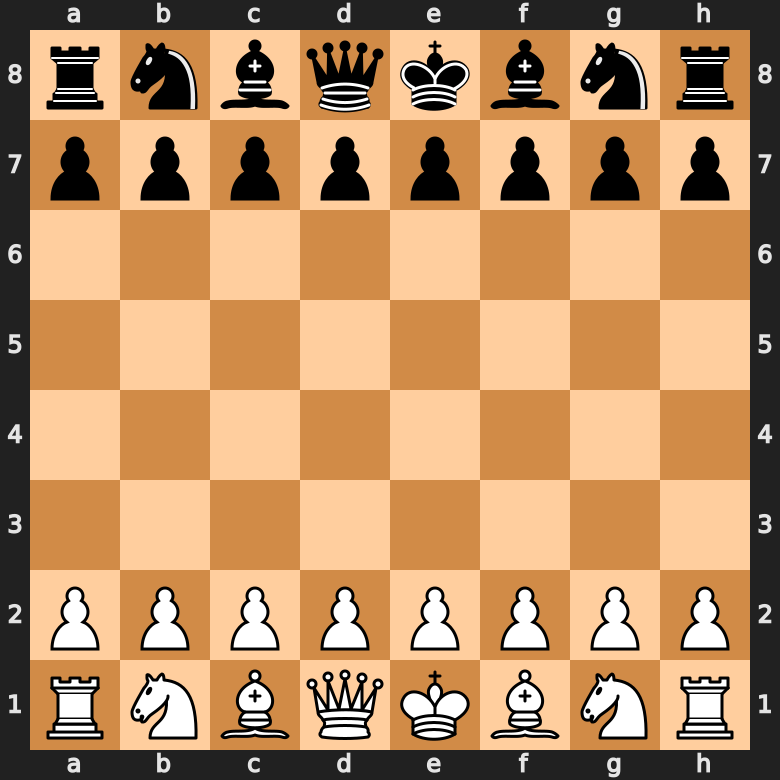
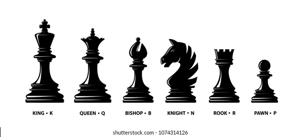

Introduction to Chess
What is Chess?
Chess is a two-player strategy board game that has been played for centuries. It is a game of skill and tactics, where players compete to checkmate their opponent's king while protecting their own. The game is played on an 8x8 grid known as the chessboard, featuring 64 squares of alternating colors.
History of Chess
The origins of chess date back to the 6th century in India, where it was known as Chaturanga. It spread to Persia, then to the Islamic world, and finally to Europe. Over the centuries, chess has evolved, with various rules and pieces changing along the way. Today, chess is recognized worldwide and has a vibrant competitive scene.
The Chess Pieces
Each player begins with 16 pieces: one king, one queen, two rooks, two knights, two bishops, and six pawns. Each type of piece has unique movements, contributing to the game's complexity:
- King: Moves one square in any direction.
- Queen: Moves any number of squares in any direction.
- Rook: Moves any number of squares horizontally or vertically.
- Bishop: Moves any number of squares diagonally.
- Knight: Moves in an L-shape (two squares in one direction and one square perpendicular).
- Pawn: Moves forward one square but captures diagonally.
How to Play Chess
The objective of chess is to checkmate your opponent's king, meaning the king is in a position to be captured and cannot escape. The game begins with each player positioning their pieces strategically. Players take turns making moves, with the goal of capturing pieces and creating threats to the opponent's king.
Conclusion
Chess is a game of endless possibilities, where each match presents a unique challenge. Whether you are a beginner or an experienced player, there is always something new to learn. Dive into the world of chess, and enjoy the journey of strategy and skill!